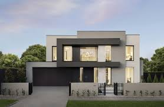
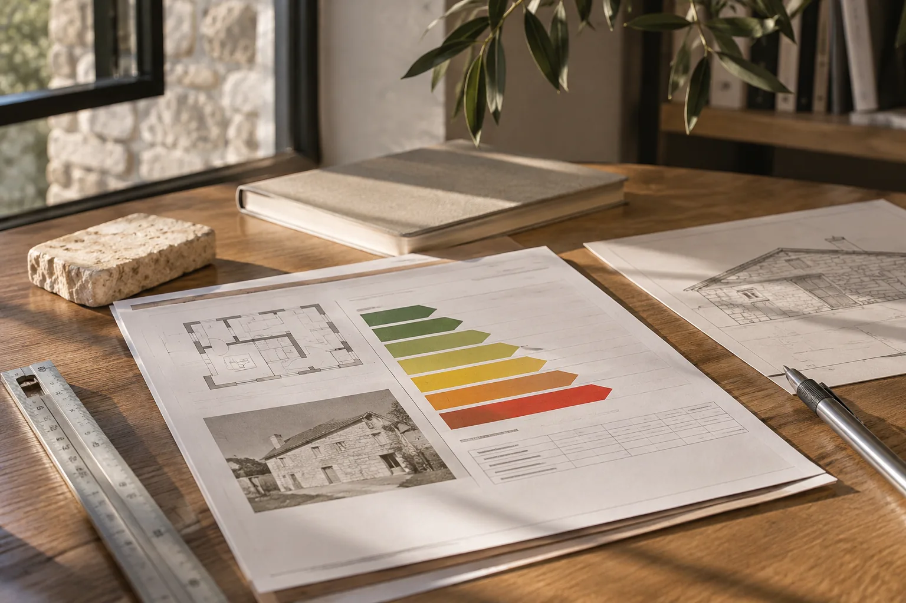

Servicios pensados para cada proyecto.
Desde una vivienda nueva hasta la mejora de un edificio existente o la elaboración de documentación técnica.
Una vivienda que empieza por ti
Diseñar una vivienda nueva es tomar decisiones sobre cómo quieres vivir. Estudiamos las necesidades, el lugar y las posibilidades de cada proyecto para desarrollar una propuesta coherente.
- Estudio de necesidades y parcela
- Diseño arquitectónico y proyecto
- Tramitación y seguimiento según el encargo

Conservar, mejorar y transformar
Trabajamos sobre edificios existentes, desde rehabilitaciones integrales hasta intervenciones parciales. Cada actuación parte del estado del inmueble y de las necesidades de sus propietarios.
- Rehabilitación integral de edificios
- Cambio y reparación de cubiertas
- Refuerzos estructurales
- Reformas y actuaciones menores

Un proceso claro, de principio a fin
La vivienda modular requiere un proyecto adaptado a la parcela, a la normativa y a las necesidades de quienes van a habitarla. Te acompañamos en las decisiones arquitectónicas y en las fases que correspondan al encargo.
- Primera conversación y necesidades
- Estudio de parcela y viabilidad
- Diseño y desarrollo del proyecto
- Tramitación y coordinación
- Seguimiento de la ejecución según el encargo

Informes y certificados técnicos
También ofrecemos servicios técnicos para conocer el estado de un edificio o documentar su eficiencia energética.
- IEE: Informe de Evaluación del Edificio
- CEE: Certificado de Eficiencia Energética
- Orientación sobre la documentación necesaria
